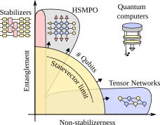
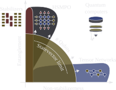

MPStab: a cutting-edge quantum circuit simulator¶
mpstab is an open-source Python library for high-performance simulation of quantum circuits with a hybrid Stabilizer-Matrix Product Operator (HSMPO) formalism.
By combining the efficiency of Clifford stabilizers with the expressiveness
of tensor networks, mpstab simulates circuits that are “mostly Clifford”
but contain non-trivial non-stabilizer resources. The hybrid stabilizer-MPO
representation was introduced in this work from Mello, Santini and Collura.




Where classical simulators reach. Statevector methods are limited by the number of qubits, stabilizer methods by non-stabilizerness (magic), and tensor networks by entanglement. The HSMPO formalism of mpstab covers states that are both highly entangled and moderately non-stabilizer.¶
Core features¶
The HSMPO formalism is implemented on top of state-of-the-art stabilizer and tensor network simulators, used as operative engines.
Hybrid evolution
Stabilizer and tensor network engines, combined.
Qibo integration
Run Qibo circuits and observables natively.
Fast noise simulation
Pauli, coherent and non-unital noise, no density matrix.
Error mitigation
Clifford data regression, trained with HSMPO.
Analytic gradients
Every parameter in one forward and one backward pass.
Advanced metrics
Entanglement entropies and fidelity bounds.